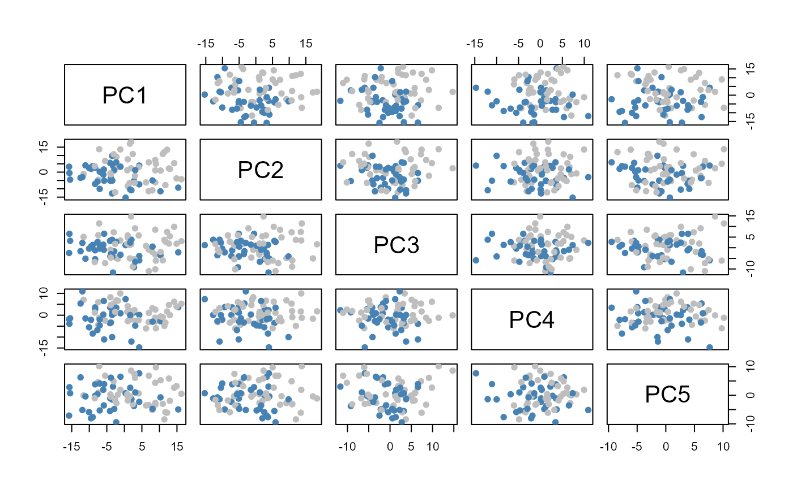
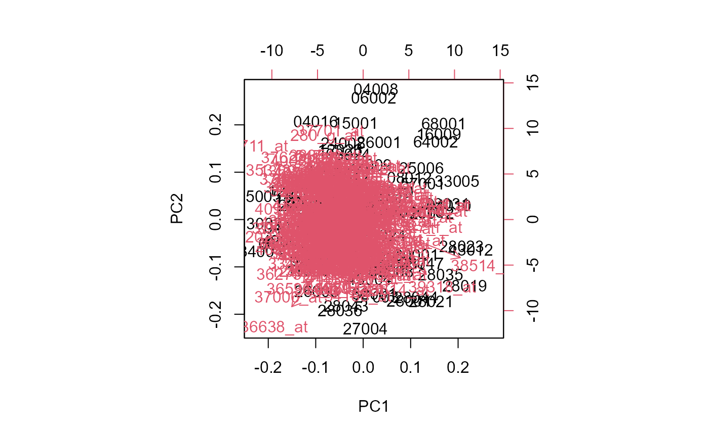

Unit 03: Classifying BCR-ABL Fusion in B-Cell Leukemia
Stephen Salerno
2025-06-17
Source:vignettes/Unit03_GeneticData.Rmd
Unit03_GeneticData.RmdBackground and Motivation
Acute lymphoblastic leukemia (ALL) is the most common childhood cancer and exhibits marked genetic heterogeneity. Different chromosomal translocations, such as BCR-ABL1 (the Philadelphia chromosome), define distinct molecular subtypes with unique prognoses and therapeutic responses. The BCR-ABL1 fusion arises from a t(9;22) translocation that generates a constitutively active tyrosine kinase, historically associated with poor outcome until the advent of targeted inhibitors (e.g. imatinib).
High-density microarray profiling measures expression of >7,000 genes in leukemia blasts, enabling supervised learning of genetic subtypes directly from transcriptomic signatures. This “molecular diagnostics” approach can:
-
Classify fusion status or other subtypes when
cytogenetic assays are unavailable.
-
Discover novel gene markers and pathways associated
with each subtype.
- Predict therapeutic response and stratify risk based on expression-derived risk scores.
However, in many retrospective or multi-center studies, only a subset of patients undergo rigorous fusion testing (e.g., RT-PCR for BCR-ABL1), leaving thousands of cases “unlabeled.” A common strategy is to train a classifier on the small labeled set and apply it to the larger unlabeled cohort. However, downstream analyses using predicted BCR-ABL1 status can be biased if one simply treats predicted labels as if they were ground truth.
Inference with Predicted Data (IPD) provides a principled framework to combine the small labeled set (true fusion status) with a large set of predicted labels (from gene-expression classifiers), correcting both estimation bias and underestimated uncertainty. In this module, we will:
-
Load and preprocess the
ALLBioconductor dataset, defining a binary outcome for BCR-ABL1 fusion.
-
Split into labeled (fusion assayed) and unlabeled
subsets.
-
Train an expression-based classifier on the labeled
set.
-
Apply Naive- (proxy only), Classical- (true only),
and IPD-based logistic regression to study the association of BCR-ABL1
with patient age.
- Demonstrate how IPD corrects bias when surrogate labels stand in for true molecular assays.
By the end, you will understand how to leverage expression-based predictions while maintaining valid inference on genetic subtypes in cohorts with partially missing gold-standard labels.
For understanding the data and generating predictions, we will be following a wonderful Bioconductor vignette by … and …
Data of T- and B-cell Acute Lymphocytic Leukemia from the Ritz Laboratory at the DFCI
Overview
Description
This module demonstrates how to build and evaluate classifiers that discriminate B-cell acute lymphoblastic leukemia (ALL) patients with the BCR-ABL fusion (Philadelphia chromosome) from those without, using microarray gene expression data. We will:
- Subset the
ALLdataset to B-cell lineage samples. - Define a binary outcome
BT_bin = 1for BCR-ABL+ vs 0 otherwise. - Split into training (70%) and test (30%) sets.
- Use MLInterfaces to train multiple classifiers (random forest, SVM, elastic net).
- Evaluate their performance (accuracy, AUC) on held-out samples.
- Compute variable importance and partial-dependence for the top model.
Participants will follow along in RStudio and complete two brief exercises.
Pre-requisites
- Basic R and tidyverse
- Familiarity with logistic classification (
glm,randomForest) - Installed packages:
ALL,MLInterfaces,genefilter,broom,ggplot2
Time outline
| Activity | Time |
|---|---|
| Load & preprocess ALL (B-cells) | 5m |
| Train/test split & model training | 10m |
| Model evaluation (accuracy, AUC) | 10m |
| Exercise 1: alternative learners | 5m |
| Variable importance & PDP | 10m |
| Wrap-up & discussion | 5m |
Learning goals
- Understand how to classify molecular subtypes using expression arrays
- Gain experience with the MLInterfaces framework
- Learn to interpret model performance metrics
Learning objectives
By the end, participants will be able to:
- Subset an
ExpressionSetby phenotype and define a binary outcome. - Train and compare multiple classifiers using
trainML. - Compute and interpret accuracy, AUC, and confusion matrices.
- Extract variable importance and partial-dependence for a chosen model.
1 Load & Preprocess the ALL Dataset
We follow the … of A machine learning tutorial : applications of the Bioconductor MLInterfaces package to gene expression data by VJ Carey and P. Atieno
3Learning with expression arrays Here we will concentrate on ALL: acute lymphocytic leukemia, B-cell type.
3.1Phenotype reduction We will identify expression patterns that discriminate individuals with BCR/ABL fusion in B-cell leukemia.
library("ALL")
data("ALL")
bALL <- ALL[, substr(ALL$BT,1,1) == "B"]
fus <- bALL[, bALL$mol.biol %in% c("BCR/ABL", "NEG")]
fus$mol.biol <- factor(fus$mol.biol)
fus
#> ExpressionSet (storageMode: lockedEnvironment)
#> assayData: 12625 features, 79 samples
#> element names: exprs
#> protocolData: none
#> phenoData
#> sampleNames: 01005 01010 ... 84004 (79 total)
#> varLabels: cod diagnosis ... date last seen (21 total)
#> varMetadata: labelDescription
#> featureData: none
#> experimentData: use 'experimentData(object)'
#> pubMedIds: 14684422 16243790
#> Annotation: hgu95av23.2Nonspecific filtering We can nonspecifically filter to 300 genes (to save computing time) with largest measures of robust variation across all samples:
mads <- apply(exprs(fus),1,mad)
fusk <- fus[ mads > sort(mads,decr=TRUE)[300], ]
fcol <- ifelse(fusk$mol.biol=="NEG", "gray", "steelblue")3.3Exploratory work For exploratory data analysis, a heatmap is customary.

Principal components and a biplot may be more revealing. How many principal components are likely to be important?

pairs(PCg$x[,1:5],col=fcol,pch=19)
biplot(PCg) 
Question 12. Modify the biplot so that instead of plotting sample ID, the symbol “O” is plotted for a NEG sample and “+” is plotted for a BCR/ABL sample. Question 13. Consider the following code
chkT = function (x, eset=fusk) {
t.test(exprs(eset)[x, eset$mol.b == "NEG"], exprs(eset)[x, eset$mol.b ==
"BCR/ABL"]) }Use it in conjunction with the biplot to interpret expression patterns of genes that appear to be important in defining the PCs.
3.4Classifier construction 3.4.1Demonstrations Diagonal LDA has a good reputation. Let’s try it first, followed by neural net and random forests. We will not attend to tuning the latter two, defaults or guesses for key parameters are used.
library(MLInterfaces)
dld1 = MLearn( mol.biol~., fusk, dldaI, 1:40 )
#> [1] "mol.biol"
dld1
#> MLInterfaces classification output container
#> The call was:
#> MLearn(formula = mol.biol ~ ., data = fusk, .method = dldaI,
#> trainInd = 1:40)
#> Predicted outcome distribution for test set:
#>
#> BCR/ABL NEG
#> 27 12
confuMat(dld1)
#> predicted
#> given BCR/ABL NEG
#> BCR/ABL 15 1
#> NEG 12 11
nnALL = MLearn( mol.biol~., fusk, nnetI, 1:40, size=5, decay=.01, MaxNWts=2000 )
#> [1] "mol.biol"
#> # weights: 1506
#> initial value 32.624176
#> iter 10 value 14.551035
#> iter 20 value 11.994412
#> iter 30 value 4.024065
#> iter 40 value 1.484303
#> iter 50 value 1.347116
#> iter 60 value 1.309560
#> iter 70 value 0.836201
#> iter 80 value 0.657234
#> iter 90 value 0.651520
#> iter 100 value 0.649107
#> final value 0.649107
#> stopped after 100 iterations
confuMat(nnALL)
#> predicted
#> given BCR/ABL NEG
#> BCR/ABL 15 1
#> NEG 8 15
rfALL = MLearn(
mol.biol~., fusk, randomForestI, 1:40 )
#> [1] "mol.biol"
rfALL
#> MLInterfaces classification output container
#> The call was:
#> MLearn(formula = mol.biol ~ ., data = fusk, .method = randomForestI,
#> trainInd = 1:40)
#> Predicted outcome distribution for test set:
#>
#> BCR/ABL NEG
#> 25 14
#> Summary of scores on test set (use testScores() method for details):
#> BCR/ABL NEG
#> 0.5367179 0.4632821
confuMat(rfALL)
#> predicted
#> given BCR/ABL NEG
#> BCR/ABL 15 1
#> NEG 10 13None of these are extremely impressive, but the problem may just be very hard.
3.4.2Gene set appraisal Question 14. We can assess the predictive capacity of a set of genes by restricting the ExpressionSet to that set and using the best classifier appropriate to the problem. We can also assess the incremental effect of combining gene sets, relative to using them separately.
One collection of gene sets that is straightforward to use and interpret is provided by the keggorthology package (see also GSEABase). Here’s how we can define the ExpressionSets for genes annotated by KEGG to Environmental (Genetic) Information Processing:
library(keggorthology)
data(KOgraph)
adj(KOgraph,nodes(KOgraph)[1])
#> $KO.Feb10root
#> [1] "Metabolism"
#> [2] "Genetic Information Processing"
#> [3] "Environmental Information Processing"
#> [4] "Cellular Processes"
#> [5] "Organismal Systems"
#> [6] "Human Diseases"
EIP = getKOprobes("Environmental Information Processing")
GIP = getKOprobes("Genetic Information Processing")
length(intersect(EIP, GIP))
#> [1] 44
EIPi = setdiff(EIP, GIP)
GIP = setdiff(GIP, EIP)
EIP = EIPi
Efusk = fusk[ featureNames(fusk) %in% EIP, ]
Gfusk = fusk[ featureNames(fusk) %in% EIP, ]Obtain and assess the predictive capacity of the genes annotated to “Cell Growth and Death”.
Question 15. How many of the genes identified by RDA as important for discriminating fusion are annotated to Genetic Information Processing in the KEGG orthology? 4Embedding features selection in cross-validation We provide helper functions to conduct several kinds of feature selection in cross-validation, see help(fs.absT). Here we pick the top 30 features (ranked by absolute t statistic) for each cross-validation partition.
dldFS = MLearn( mol.biol~., fusk, dldaI, xvalSpec("LOG", 5, balKfold.xvspec(5), fs.absT(30) ))
#> [1] "mol.biol"
dldFS
#> MLInterfaces classification output container
#> The call was:
#> MLearn(formula = mol.biol ~ ., data = fusk, .method = dldaI,
#> trainInd = xvalSpec("LOG", 5, balKfold.xvspec(5), fs.absT(30)))
#> Predicted outcome distribution for test set:
#>
#> BCR/ABL NEG
#> 42 37
#> history of feature selection in cross-validation available; use fsHistory()
confuMat(dld1)
#> predicted
#> given BCR/ABL NEG
#> BCR/ABL 15 1
#> NEG 12 11
confuMat(dldFS)
#> predicted
#> given BCR/ABL NEG
#> BCR/ABL 34 3
#> NEG 8 34
library(ALL)
data(ALL)
# 1.1) Subset to B-cell lineage only (exclude T-cell)
bcell_eset <- ALL[, grep("^B", ALL$BT)]
# 1.2) Define binary outcome: BCR/ABL+ vs others
bcell_pheno <- pData(bcell_eset) %>%
rownames_to_column("Sample") %>%
as_tibble() %>%
transmute(
Sample,
BT,
BT_bin = if_else(BT == "BCR/ABL+", 1L, 0L)
)
table(bcell_pheno$BT, bcell_pheno$BT_bin)2 Train/Test Split
set.seed(2025)
n <- nrow(bcell_pheno)
train_idx <- sample(n, size = floor(0.7 * n))
train_eset <- bcell_eset[, train_idx]
test_eset <- bcell_eset[, -train_idx]
train_pheno <- bcell_pheno %>% slice(train_idx)
test_pheno <- bcell_pheno %>% slice(-train_idx)
tibble(
set = c("train","test"),
n_samples= c(nrow(train_pheno), nrow(test_pheno))
)3 Model Training with MLInterfaces
learners <- c("randomForest", "svmRadial", "glmnet")
models <- trainML(
eset = train_eset,
outcome = "BT_bin",
predict.type = "prob",
learners = learners
)4 Model Evaluation
results <- predictML(
object = models,
eset = test_eset,
outcome = "BT_bin"
)
# Show accuracy and AUC
results$performance5 Exercise 1: Try k-Nearest Neighbors
Exercise:
Add "knn" to the learners vector, re-run
trainML and predictML, and compare the k-NN
performance to the other models.
Hint
learners2 <- c(learners, "knn")
models2 <- trainML(eset=train_eset, outcome="BT_bin", predict.type="prob", learners=learners2)
results2 <- predictML(models2, test_eset, outcome="BT_bin")
results2$performance6 Variable Importance & Partial Dependence
# Variable importance for randomForest
imp_rf <- modelPartsML(models[["randomForest"]], newdata=test_eset, outcome="BT_bin")
plot(imp_rf, top=10)
# Partial dependence for top gene
pd_rf <- modelProfileML(models[["randomForest"]], newdata=test_eset, vars="Gene424") # replace with top probe
plot(pd_rf)Background & Motivation
We want to illustrate IPD in the context of a
classification (logistic) problem using real gene
expression data. The Bioconductor object
ALL contains microarray expression levels
for acute lymphoblastic leukemia patients, along with clinical
annotations. In particular, the variable BT (BCR/ABL
positive vs negative) can be the “true” binary outcome.
We simulate a scenario where:
- Only 50% of patients have their true “BCR/ABL” status measured (labeled set).
- The remaining 50% have no measured status, but we predict it using a
logistic model based on a single gene, say
CD19expression (for simplicity). - We then want to perform IPD to estimate the
association between another gene (e.g.
CD38) and true BCR/ABL status-correcting for the fact that we used a predicted binary label in the unlabeled half.
Concretely, we will:
- Use
ALLexpression data: extractexprs(all)["CD19", ]andexprs(all)["CD38", ]. - Dichotomize
BTinto 0/1 ("BCR/ABL+" = 1, else 0). - Split dataset 50/50 into labeled vs unlabeled.
- Fit a logistic regression (GLM) on the labeled half
to predict
BT ~ CD19 + age + gender(if age/gender available). - Predict
BT_hatin the unlabeled half (probabilities → 0/1). - Run
ipd::ipd(...)to estimate $_{}$ in a logistic modelBT ~ CD38(i.e., we ask: “what is the log-odds effect of CD38 expression on having BCR/ABL?”), adjusting for prediction error.
5.1 Load and Preprocess the ALL Dataset
# 1) Install ALL if necessary:
# BiocManager::install("ALL")
library(ALL)
# 2) Explore the ALL object:
data(ALL)
show(ALL)
print(summary(pData(ALL)))
hist(cvv <- apply(exprs(ALL),1,function(x)sd(x)/mean(x)))
ok <- cvv > .08 & cvv < .18
fALL <- ALL[ok,]
show(fALL)The object ALL is an ExpressionSet
with:
- Expression matrix:
exprs(ALL)(features × samples). - Phenotype data:
pData(ALL)(samples × clinical variables), includingBT,age,sex, etc.
We extract:
- Gene expression for
CD19andCD38. - Binary outcome
BT: recodeBT == "BCR/ABL+"as 1, else 0. - Clinical covariates:
age(in years),sex(factor “M”/“F”).
library(ALL)
library(hgu95av2.db)
library(AnnotationDbi)
library(tidyverse)
library(tibble)
# 1. Get the one PROBEID each for CD19/CD38
mapping <- select(
hgu95av2.db,
keys = rownames(exprs(ALL)),
columns = c("PROBEID","SYMBOL"),
keytype = "PROBEID"
)
probe_CD19 <- mapping$PROBEID[which(mapping$SYMBOL=="CD19")]
probe_CD38 <- mapping$PROBEID[which(mapping$SYMBOL=="CD38")]
expr_CD19 <- exprs(ALL)[probe_CD19, ]
expr_CD38 <- exprs(ALL)[probe_CD38, ]
# 2. Build pheno tibble
pheno <- pData(ALL) %>%
rownames_to_column(var = "SEQN") %>% # copy sample IDs
as_tibble() %>%
dplyr::select(SEQN, BT, age, sex) %>%
mutate(
# New binary: all B-cell lineages → 1, all T-cell lineages → 0
BT_bin = if_else(str_starts(BT, "B"), 1L, 0L),
sex = factor(sex, levels = c("M","F")),
CD19 = expr_CD19[SEQN],
CD38 = expr_CD38[SEQN]
) %>%
filter(
!is.na(age),
!is.na(sex),
!is.na(BT_bin),
!is.na(CD19),
!is.na(CD38)
)
# Check
table(pheno$BT) # shows B/B1… vs T/T1…
table(pheno$BT_bin) # now balanced 1's vs 0's
head(pheno)Note: If multiple probes map to the same gene, you could take the average or median; here, we assume one row per gene.
5.2 Split into Labeled vs Unlabeled
We’ll randomly label 50% (labeled) and hide
BT_bin for the other 50% (unlabeled). The labeled set will
be used to fit the logistic prediction model; the unlabeled set’s
outcome will be predicted.
set.seed(2025)
N <- nrow(pheno)
n_label <- floor(N * 0.5)
labeled_idx <- sample(seq_len(N), n_label)
all_ipd <- pheno %>%
mutate(
set_label = if_else(row_number() %in% labeled_idx, "labeled", "unlabeled"),
Y = if_else(set_label == "labeled", BT_bin, NA_real_), # hide in unlabeled
pred_gene = CD19 # we will use CD19 as our predictor for BT
) %>%
dplyr::select(set_label, Y, pred_gene, CD38, age, sex)
# Check counts:
all_ipd %>% group_by(set_label) %>% summarize(n = n())Explanation:
Yholds the true binary outcome (0or1) only for labeled rows.pred_gene = CD19is the predictor we will use to predict BCR/ABL status in the unlabeled set.CD38,age, andsexare covariates for the downstream model of interest.
5.3 Fit a Prediction Model (Logistic) on Labeled
Fit a logistic (GLM) for
Y ∼ pred_gene + age + sex on the labeled data:
glm_pred <- glm(
formula = Y ~ pred_gene + age + sex,
data = filter(all_ipd, set_label == "labeled"),
family = binomial(link = "logit")
)
summary(glm_pred)
# install.packages("logistf") # if needed
library(logistf)
# 1) Fit Firth-penalized logistic on the labeled subset
labeled_df <- filter(all_ipd, set_label == "labeled")
firth_mod <- logistf(
formula = Y ~ pred_gene + age + sex,
data = labeled_df
)
# 2) Summarize with broom
library(broom)
tidy(firth_mod)Generate predicted probabilities (p_hat = P(Y=1)) for
all samples, then create a binary “hard” prediction (≥ 0.5 → 1
else 0) for demonstration. IPD can also use the probabilities directly,
but most IPD methods treat the predicted outcome as numeric: here, we
cast to 0/1.
all_ipd <- all_ipd %>%
mutate(
predicted_prob = predict(glm_pred, newdata = ., type = "response"),
predicted_Y = if_else(predicted_prob >= 0.5, 1, 0)
)
# Verify:
all_ipd %>% filter(set_label == "labeled") %>% select(Y, predicted_prob, predicted_Y) %>% head()
all_ipd %>% filter(set_label == "unlabeled") %>% select(predicted_prob, predicted_Y) %>% head()Note: In real IPD practice, you can feed the predicted probabilities directly; here, we convert to a discrete prediction so that downstream logistic IPD is clearer. Alternatively, use continuous probabilities and adjust IPD accordingly.
5.4 Naive vs Classical vs IPD for CD38 Effect
We want to estimate the log-odds effect of CD38 on true
BCR/ABL status in a logistic model:
We ignore age and sex in this downstream
model, purely to show how IPD works when you have a predicted binary
outcome.
5.4.1 Naive
Fit logistic regression on unlabeled only, treating
predicted_Y as if it were truth:
unlabeled_ALL <- filter(all_ipd, set_label == "unlabeled")
naive_logit <- glm(predicted_Y ~ CD38, data = unlabeled_ALL, family = binomial(link = "logit"))
naive_coef <- coef(summary(naive_logit))["CD38", c("Estimate", "Std. Error")]
naive_coefInterpretation:
- Because
predicted_Ywas a function ofCD19, which may correlate withCD38, the association betweenCD38andpredicted_Yis biased (and the SE is mis-estimated).
5.4.2 Classical
Fit logistic regression on the labeled subset, using
true Y:
labeled_ALL <- filter(all_ipd, set_label == "labeled")
classical_logit <- glm(Y ~ CD38, data = labeled_ALL, family = binomial(link = "logit"))
classical_coef <- coef(summary(classical_logit))["CD38", c("Estimate", "Std. Error")]
classical_coefInterpretation:
- This uses only 50% of samples, so it might be noisy (wide CI) but unbiased (since we use true
Y).
5.4.3 IPD
Now use ipd::ipd() to correct for the fact that 50% of
outcomes were imputed via a logistic model on CD19. We run
only logistic IPD by specifying family = binomial inside
the formula:
# Prepare ipd data.frame with required columns:
ipd_ALL_df <- all_ipd %>%
select(set_label, Y, predicted_Y, CD38) # we only need CD38 for downstream
# Note: ipd() automatically recognizes the model family if you specify `family = "binomial"`
# within the formula (see ?ipd). For demonstration, we explicitly pass a 2-level Y.
set.seed(2025)
ipd_ALL_res <- ipd(
formula = Y ~ CD38,
data = ipd_ALL_df,
true_col = "Y",
pred_col = "predicted_Y",
label_col = "set_label",
family = binomial(link = "logit"),
method = c("postpi_analytic", "ppi", "ppi_plus", "chen"),
nboot = 200
)
# Extract logistic coefficients for CD38:
ipd_ALL_tab <- map_dfr(ipd_ALL_res, ~ tibble(
Method = .x$method_name,
Estimate = coef(summary(.x$fit))["CD38", "Estimate"],
`Std. Error`= coef(summary(.x$fit))["CD38", "Std. Error"]
))
# Combine naive/classical with IPD:
compare_ALL <- bind_rows(
tibble(Method = "Naive (predicted)", Estimate = naive_coef["Estimate"],
`Std. Error` = naive_coef["Std. Error"]),
tibble(Method = "Classical (true)", Estimate = classical_coef["Estimate"],
`Std. Error` = classical_coef["Std. Error"]),
ipd_ALL_tab
) %>%
mutate(
Lower = Estimate - 1.96 * `Std. Error`,
Upper = Estimate + 1.96 * `Std. Error`
)
compare_ALL
ggplot(compare_ALL, aes(x = Estimate, y = Method, color = Method)) +
geom_point(size = 2) +
geom_errorbarh(aes(xmin = Lower, xmax = Upper), height = 0.2) +
labs(
title = "Logistic effect of CD38 on BCR/ABL status: Naive vs Classical vs IPD",
x = expression(hat(beta)[CD38]),
y = ""
) +
theme_minimal() +
theme(legend.position = "none")Interpretation:
- Naive logistic is biased (since predicted_Y is a function of CD19, which correlates with CD38).
- Classical logistic (only 50% labeled) is unbiased but wide.
- IPD methods recover something close to classical’s $_{}$ but tend to have narrower SE because they leverage the additional predicted data.
5.5 Diagnostic Plots & Exercises
5.5.1 ROC Curve for Prediction Model
Assess how well CD19 alone (with age & sex possibly)
predicts BCR/ABL. A poor prediction model yields weaker IPD
performance.
# Install pROC if necessary: install.packages("pROC")
library(pROC)
roc_obj <- roc(labeled_ALL$Y, predict(glm_pred, newdata = labeled_ALL, type = "response"))
plot.roc(roc_obj, main = "ROC curve: CD19-based logistic predicting BCR/ABL")Exercise 4.1:
Improve the prediction model by adding
CD38to the predictors:glm_pred2 <- glm(Y ~ pred_gene + CD38 + age + sex, data = labeled_ALL, family = "binomial")Recompute IPD and compare the effect of
CD38when the prediction model includes CD38 itself vs when it doesn’t. (Hint: If you use CD38 to predict, then in IPD you’re “double-dipping,” and methods like PPI++ may behave erratically.)
5.5.2 Bootstrap Coverage
Use PostPI bootstrap to empirically check coverage of 95% CI for $_{}$. (In a small workshop, you might subsample fewer bootstraps.)
# This code is computationally expensive; run only 100 bootstraps for demonstration:
set.seed(2025)
ipd_ALL_postpi_boot <- ipd(
formula = Y ~ CD38,
data = ipd_ALL_df,
true_col = "Y",
pred_col = "predicted_Y",
label_col = "set_label",
family = binomial(link = "logit"),
method = c("postpi_bootstrap"),
nboot = 100
)
# Extract bootstrap distribution of CD38 coefficient, then count how often
# the true classical coefficient (classical_logit$coeff["CD38"]) falls inside.
boot_dist <- ipd_ALL_postpi_boot$boot_tbl$CD38 # hypothetical location
true_beta <- coef(classical_logit)["CD38"]
mean(boot_dist - 1.96*sd(boot_dist) <= true_beta & true_beta <= boot_dist + 1.96*sd(boot_dist))Exercise 4.2:
- Plot the bootstrap distribution (histogram) of $_{}$ from PostPI. Superimpose the classical $_{}$ as a vertical line.
5.6 Summary & Takeaways
- In a binary IPD setting (logistic regression), predictions (from logistic or other classifier) can be treated as “imputed” outcomes.
- Naively regressing on the predicted labels is biased and underestimates uncertainty.
- IPD methods (particularly PPI / PPI++) can correct logistic-regression coefficients to approximate what you would have obtained had you measured the true outcome on everyone.
- Quality of the predictor (AUC, calibration) directly impacts IPD performance: if your classifier is poor, IPD cannot magically fix it.
- Caveat (collider bias): When you use the same variable (e.g. CD38) for both prediction and downstream inference, IPD methods may misbehave unless you follow proper “sample splitting” or cross-fitting strategies.